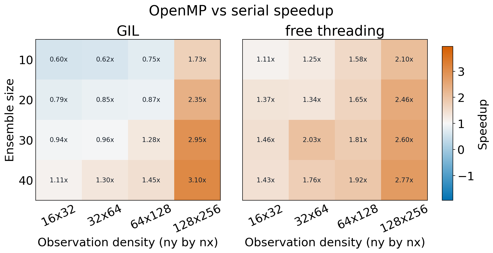
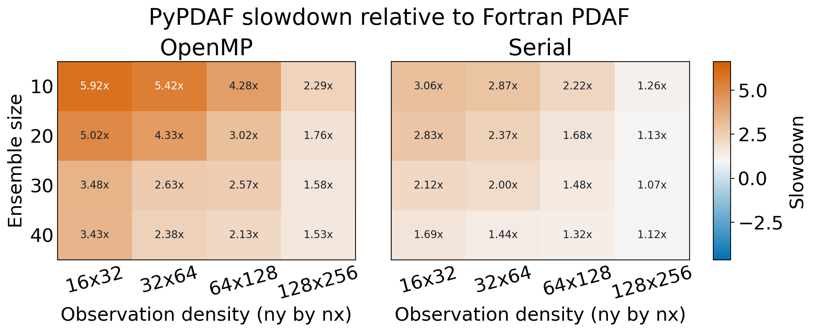

OpenMP benchmarks¶
The following benchmarks compare pyPDAF configurations across ensemble sizes
and observation-grid densities. They are representative measurements from the
openmp_test benchmark rather than performance guarantees; results depend on
the processor, MPI implementation, OpenMP runtime, and thread placement.
OpenMP speedup¶

Each cell reports the serial pyPDAF runtime divided by the runtime of the
corresponding OpenMP build. Values above 1x therefore indicate a speedup,
while values below 1x indicate that the OpenMP build was slower. The two
panels show standard GIL-enabled Python and free-threaded Python.
Python and Fortran comparison¶

Each cell reports the pyPDAF runtime divided by the runtime of the matching
Fortran PDAF benchmark. A value of 1x indicates equal runtime, and a larger
value indicates that pyPDAF was slower. The panels compare OpenMP-enabled and
serial runs separately.